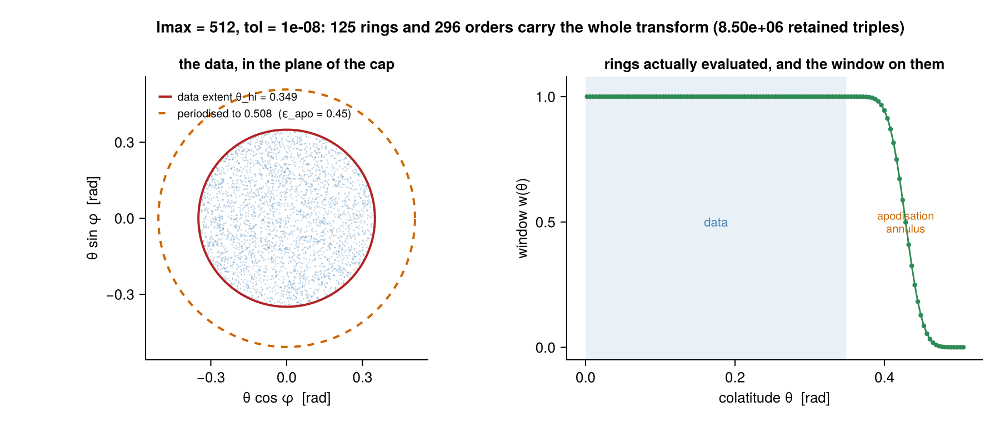
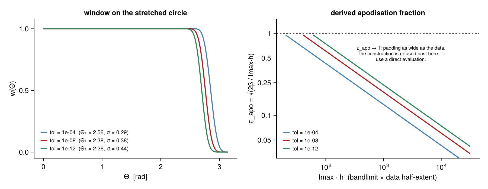
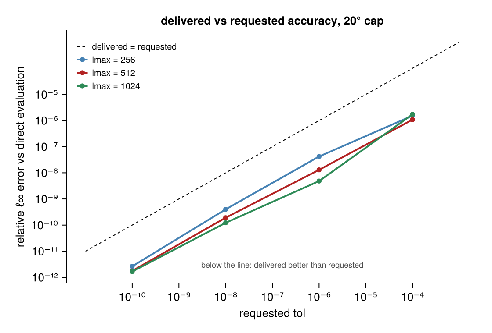
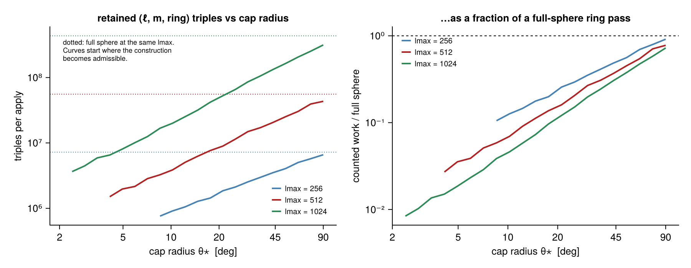
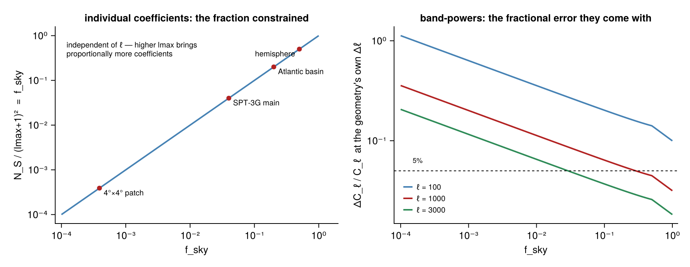

Guide
Install and first transform
using PartialFSHT: PartialFSHT
using LinearAlgebra: LinearAlgebra
using FINUFFT: FINUFFT # or NonuniformFFTs — a fast NUFFT is required
θ = ... # colatitudes in [0, π]
φ = ... # longitudes in [0, 2π)
plan = PartialFSHT.Plan(θ, φ; lmax = 2048, tol = 1e-8)
f = zeros(ComplexF64, length(θ))
alm = PartialFSHT.zeros_alm(2048)
LinearAlgebra.mul!(f, plan, alm) # synthesis
LinearAlgebra.mul!(alm, LinearAlgebra.adjoint(plan), f) # exact adjointCoefficients are complex orthonormal Condon–Shortley harmonics in FastSphericalHarmonics sph_mode layout. Only $(\ell_{\max}+1)^2$ of the array's slots are real modes; the rest is padding the transform never reads, so filling a whole array with random numbers is fine for comparing fields and wrong for comparing coefficients.
Runnable versions of everything below are in examples/.
Which call do I want?
Most real tasks never need an inversion. In rough order of how often each is the right answer:
| I want to… | do this | why |
|---|---|---|
| compare partial observations against a global model, in coefficient space | window both sides identically and compare $(\ell,m)$ — apply_resolution! | both sides become the same operator applied to their own field, so the comparison is exact |
| know which wavenumbers carry what energy over a region | spectrum | band-powers are massively overdetermined where coefficients are not |
| filter, differentiate or interpolate inside the region | solve! with mode = :minnorm | optimal there; behaviour outside is irrelevant |
| build a global field from regional data | a background + assimilation, not this package's inversion | one region cannot set the global state |
| just evaluate a known field at scattered points | mul!(f, plan, alm) | exact at any coverage, no caveats |
Ask recoverability before spending compute:
r = PartialFSHT.recoverability(θ, φ, lmax)
# (fsky, shannon, ncoeff, recoverable_fraction, Δℓ, nbands, npoints, box)What the geometry does
The transform evaluates the degree-$\ell_{\max}$ field on the few rings that meet the data's colatitude interval, apodises, periodises and interpolates with one small NUFFT. The apodisation annulus outside the data is where the window falls to zero.

The window and its width are derived, not tuned: $\varepsilon_{\rm apo} = \sqrt{2\beta/(L h)}$ with $\beta = |\ln\varepsilon|$. When that would exceed one — padding as wide as the data — the construction is refused rather than silently loosened, because it can no longer deliver the requested tolerance.

Accuracy
Delivered accuracy sits comfortably below the request across bandlimits, verified against direct associated-Legendre evaluation:

The adjoint is the forward pipeline transposed stage by stage, so $\langle \mathcal{Y}a, f\rangle = \langle a, \mathcal{Y}^*f\rangle$ holds to round-off, not to the transform tolerance. That is what makes the pair usable inside an iterative solver.
Where the speedup comes from
Polar optimisation confines each order to the contiguous ring range where it is not negligible. The retained work falls as roughly $\theta_\star^2$:

Choosing a method
AutoAlgorithm (the default) picks by counted cost. You can also ask for one:
| method | when |
|---|---|
DirectAlgorithm | the oracle, O(M L²) — small point sets, and what every fast path is tested against |
StretchAlgorithm | one stretched colatitude interval — the workhorse |
MultiBoxAlgorithm | one leaf per disjoint component of the point set |
NUFSHTAlgorithm | full-sphere leaf via NUFSHT's public plans (needs using NUFSHT) |
NUFFT backends are types: DirectSumBackend() (the O(M·n₁n₂) reference), FINUFFTBackend(), NonuniformFFTsBackend(), AutoNUFFT(). AutoNUFFT errors when no fast backend is loaded rather than silently selecting the reference — that would be a $10^6$-fold slowdown a caller would not notice until it had cost them the run.
Parallelism
| backend | what it parallelises | needs |
|---|---|---|
SerialBackend | — | — |
ThreadedBackend | spherical harmonic order in the ring pass; boxes in a multi-box leaf | using OhMyThreads |
MPIBackend | points across ranks — synthesis local, adjoint Allreduced | using MPI |
DistributedBackend | independent node sets across workers, via mul_nodeset | using Distributed |
The threaded result is bit-identical to the serial one: orders are independent and each is summed in the same sequence regardless of which task runs it.
Batching (ntrans) raises arithmetic intensity rather than parallelism — one $\bar P$ value feeds $2\cdot$ ntrans accumulations against unchanged recurrence-state traffic.
Allocation
The package's own stages allocate nothing per apply, in either direction, at any thread count. Two things outside that boundary do:
- FFT plans are built at one thread on purpose — a multithreaded FFTW plan spawns Julia tasks on every execution.
fft_threadsoverrides it. - the fast NUFFT backends allocate per exec at more than one Julia thread, for the same reason reached from FINUFFT's side.
nufft_kwargs = (nthreads = 1,)makes a FINUFFT apply strictly allocation-free, at roughly twice the NUFFT time.
See Implementation notes for the measurements behind both.
What partial data cannot give you
plan' * f is not "the coefficients of my data". It is the exact adjoint, and therefore the masked field's coefficients — mode-coupled and leakage-biased. Only $\sim N_S = (\ell_{\max}+1)^2 f_{\rm sky}$ coefficient directions are constrained, and that fraction is $f_{\rm sky}$ independently of $\ell$. Band-powers, by contrast, are well determined:

solve! names its regularisation (:cg, :wiener, :minnorm) because there is no regularisation-free answer, and returns the Shannon number, $\Delta\ell$, iteration count and residual alongside the coefficients. The full discussion is in Recoverability.